Class Point
- Namespace
- OpenMEPSandbox.Geometry
- Assembly
- OpenMEPSandbox.dll
public class Point- Inheritance
-
Point
- Inherited Members
Methods
AssignmentMatching(List<Point>, List<Point>, double)
Assignments Optimize by using Hungarian Algorithm
[MultiReturn(new string[] { "lines", "machines", "devices" })]
public static Dictionary<string, object?> AssignmentMatching(List<Point> lcMachines, List<Point> lcDevices, double limit = 1.7976931348623157E+308)Parameters
lcMachinesList<Point>list location of machine
lcDevicesList<Point>list location of devices
limitdoublenumber distance limit to break
Returns
AssignmentMatching(List<Point>, List<Point>)
Assignments Optimize by using Hungarian Algorithm
[MultiReturn(new string[] { "assignment", "mincost" })]
public static Dictionary<string, object?> AssignmentMatching(List<Point> lcMachines, List<Point> lcDevices)Parameters
Returns
- Dictionary<string, object>
Permutation of list index matching optimize
BruteForceMatching(List<Point>, List<Point>)
Assignments Optimize by using Brute Force
[MultiReturn(new string[] { "assignment", "mincost" })]
public static Dictionary<string, object?> BruteForceMatching(List<Point> lcMachines, List<Point> lcDevices)Parameters
Returns
- Dictionary<string, object>
minimum cost can optimize
Centroid(List<Point>)
Get the centroid of a list of points
public static Point Centroid(List<Point> points)Parameters
pointsList<Point>list of points
Returns
- Point
centroid
Examples
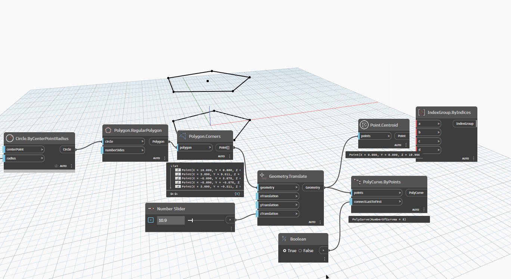
CompareTo(Point, Point)
Compares this a point with another point. 0: if this is identical to other 1: if this is greater than other -1: if this is less than other
Component evaluation priority is first X, then Y, then Z.
public static double CompareTo(Point point1, Point point2)Parameters
point1Pointthe first point to use in comparison
point2Pointthe second point to use in comparison
Returns
- double
value compare
Examples
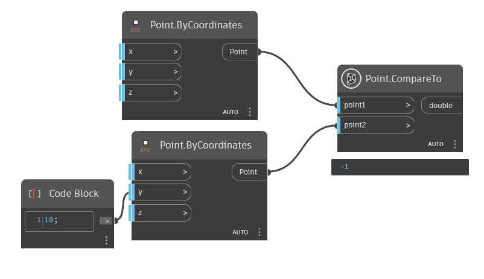
Deconstruct(Point)
Deconstruct a point into its components
[MultiReturn(new string[] { "X", "Y", "Z" })]
public static Dictionary<string, object?> Deconstruct(Point point)Parameters
pointPointthe point
Returns
- Dictionary<string, object>
X point
Examples
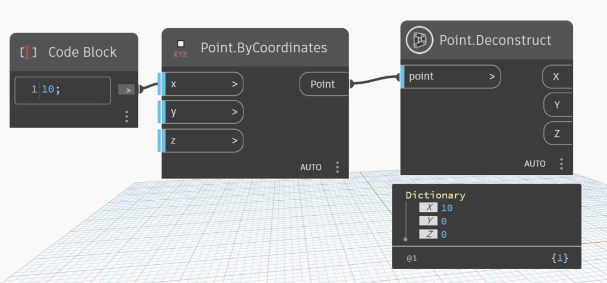
Euclidean(Point, Point)
return distance two points by Euclidean distance
public static double Euclidean(Point p1, Point p2)Parameters
p1Pointthe first point
p2Pointthe second point
Returns
- double
euclidean between two point
FindLocationShortest(Point, List<Point>, double)
return the closest point from a list of points by manhattan distance
[MultiReturn(new string[] { "point", "distance" })]
public static Dictionary<string, object?> FindLocationShortest(Point lcMachine, List<Point> lcDevices, double limit = 1.7976931348623157E+308)Parameters
Returns
FindShortestRoute(List<Point>)
takes a list of 3D points as input and returns the shortest route that visits each point exactly once' https://en.wikipedia.org/wiki/Travelling_salesman_problem
public static List<Line> FindShortestRoute(List<Point> points)Parameters
pointsList<Point>the list 3d points
Returns
- List<Line>
shortest route
Examples
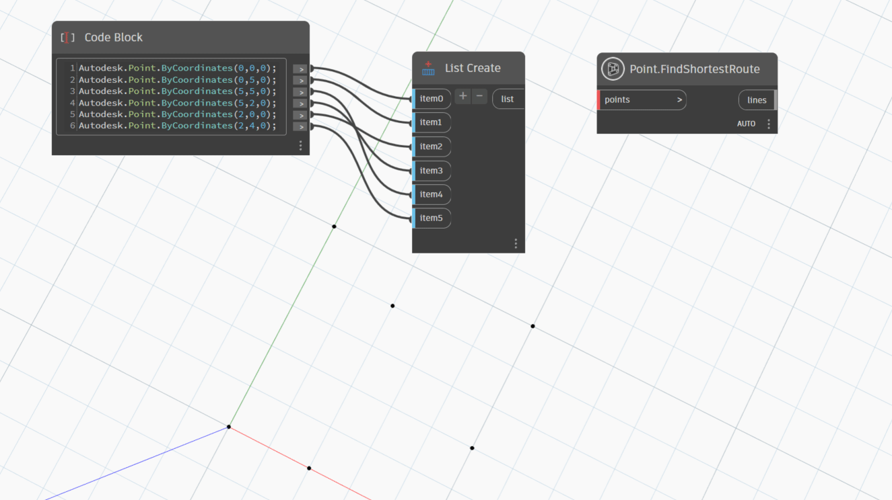
IsInPolygon(Point, Polygon)
Returns whether an input point is contained within the polygon. If the polygon is not planar then the point will be projected onto the best-fit plane and the containment will be computed using the projection of the polygon onto the best-fit plane. This will return a failed status if the polygon self-intersects.
[NodeCategory("Query")]
public static bool IsInPolygon(Point point, Polygon polygon)Parameters
pointPointthe point
polygonPolygonthe polygon
Returns
- bool
true if point is in polygon
Examples
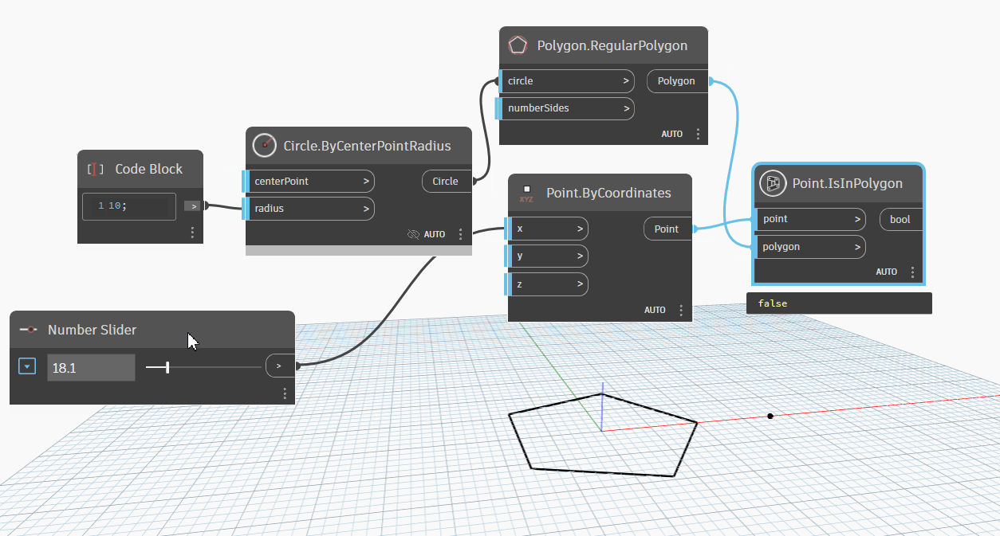
Exceptions
IsOnLine(Point, Line, double)
Test whether a point lies on a line.
[NodeCategory("Query")]
public static bool IsOnLine(Point point, Line line, double tolerance = 0.001)Parameters
pointPointa point to check
lineLineThe line to test against.
tolerancedoubleDefault is use 1e-6
Returns
- bool
Returns true if point is on line.
Examples
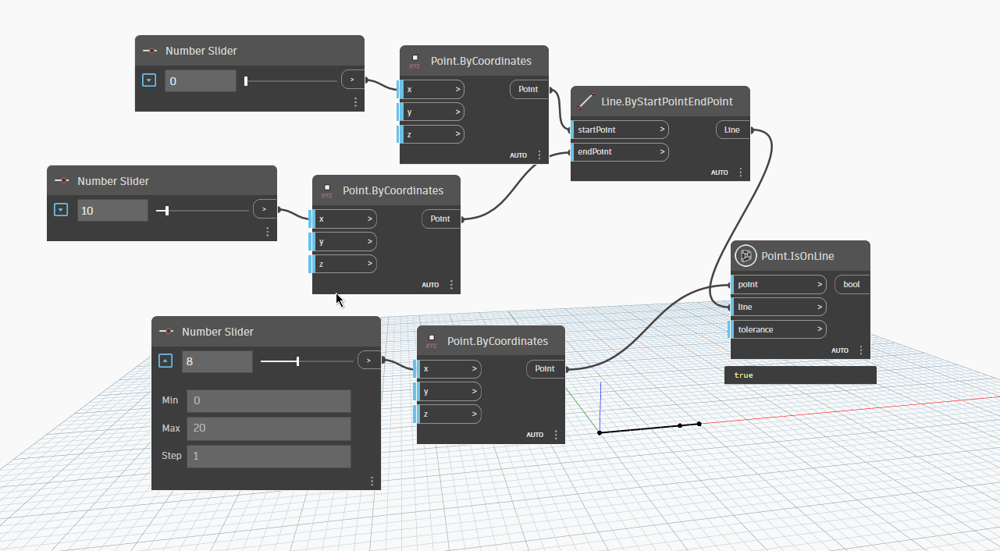
IsOnPlane(Point, Plane, double)
Test whether a point lies on a plane.
[NodeCategory("Query")]
public static bool IsOnPlane(Point point, Plane plane, double tolerance = 0.001)Parameters
pointPointpoint to check
planePlaneThe plane to test against.
tolerancedoubleDefault is use 1e-6
Returns
- bool
Returns true if point is on plane.
Examples
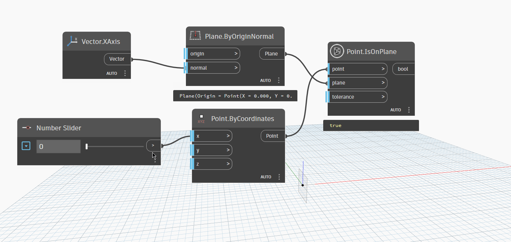
Manhattan(Point, Point)
return distance between two points by Manhattan distance
public static double Manhattan(Point p1, Point p2)Parameters
p1Pointp2Point
Returns
- double
manhattan distance between two point
Offset(Point, double, Vector)
Offset a point by a distance and a direction
public static Point Offset(Point point, double distance, Vector direction)Parameters
pointPointpoint to offset
distancedoubledistance from start point to end point
directionVectordirection to direct to
Returns
- Point
new point
Examples
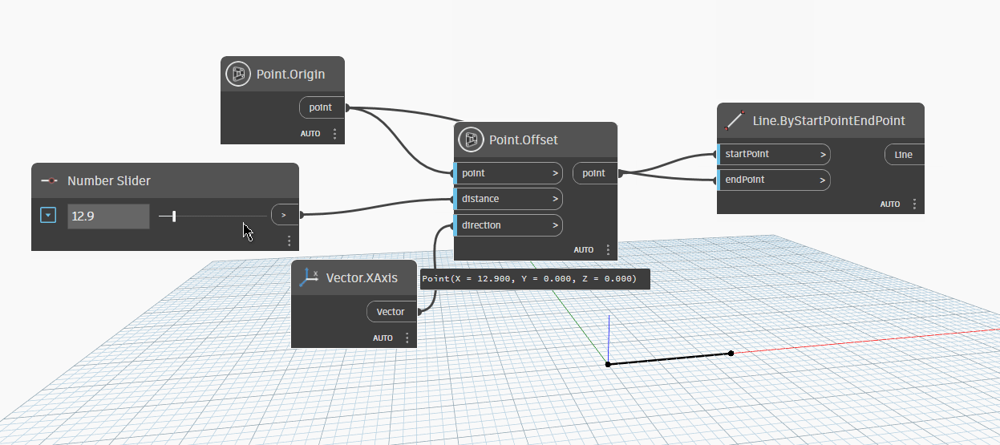
Origin()
Gets a point with X,Y,Z = 0
public static Point Origin()Returns
- Point
point
Examples
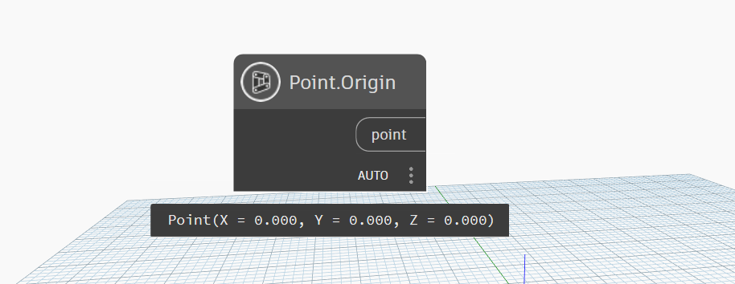
ProjectOnToLine(Point?, Line?)
Project a point onto a line
public static Point ProjectOnToLine(Point? point, Line? line)Parameters
pointPointPoint need to project
lineLineLine to project the point
Returns
- Point
projected point
Examples
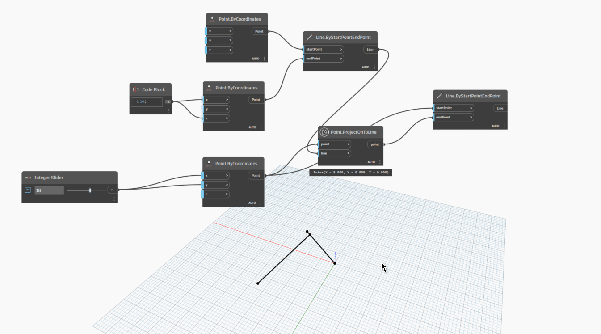
ProjectOntoPlane(Point, Plane)
Project a point onto a plane
public static Point ProjectOntoPlane(Point point, Plane plane)Parameters
pointPointpoint need to project
planePlaneplane to be project
Returns
- Point
new point projected on plane
Examples
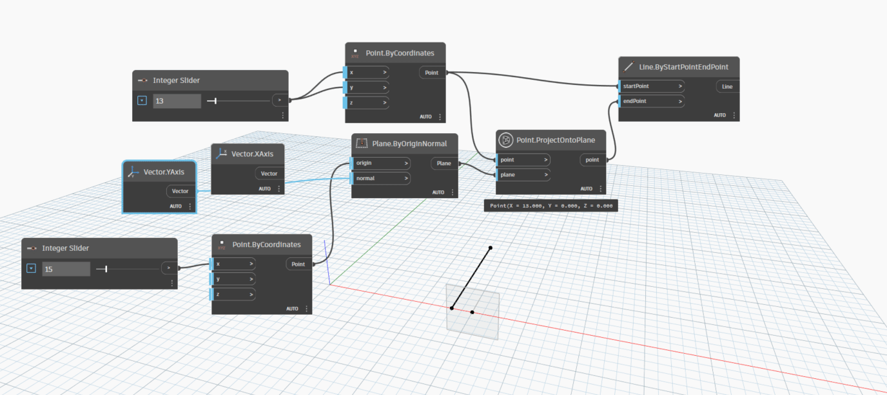
Reflect(Point, Plane)
Reflect Point by Plane
public static Point Reflect(Point point, Plane plane)Parameters
pointPointpoint need to reflect
planePlaneplane to reflect point
Returns
- Point
point has reflected
Examples
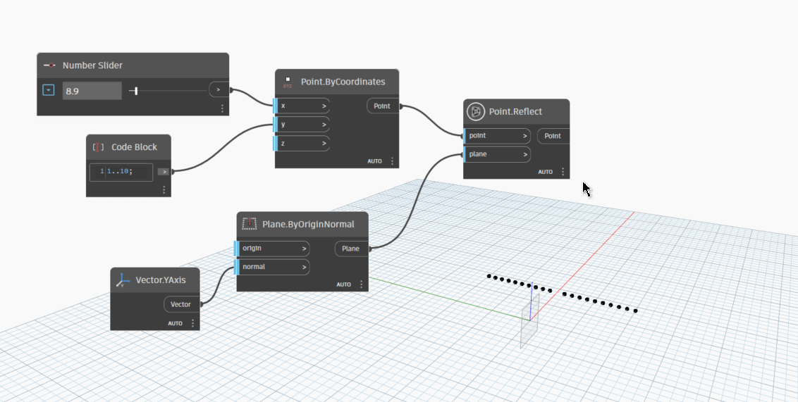